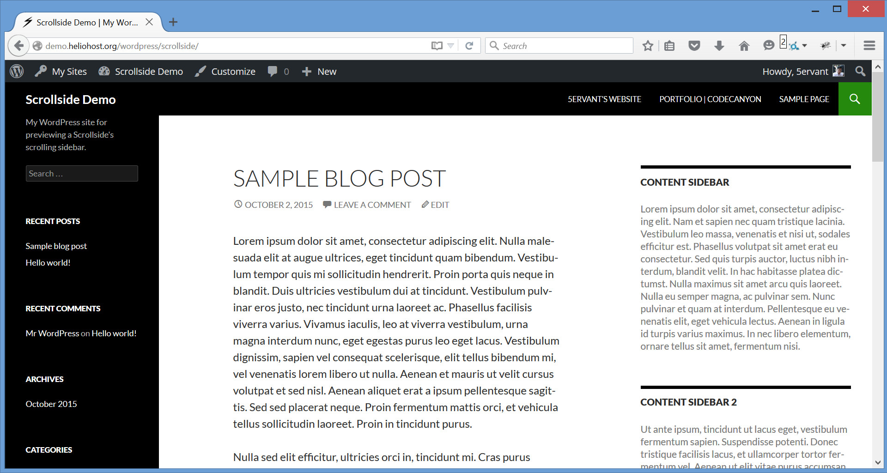
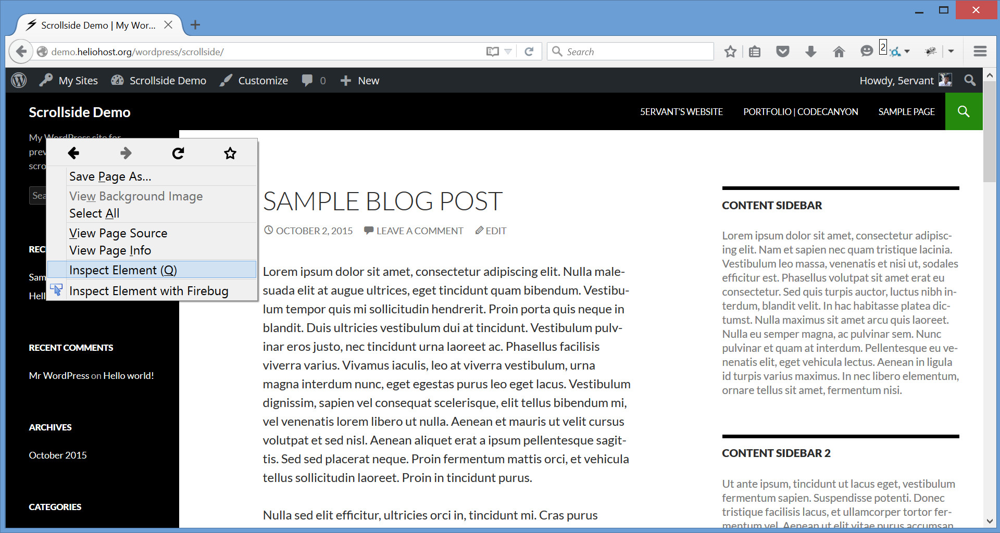
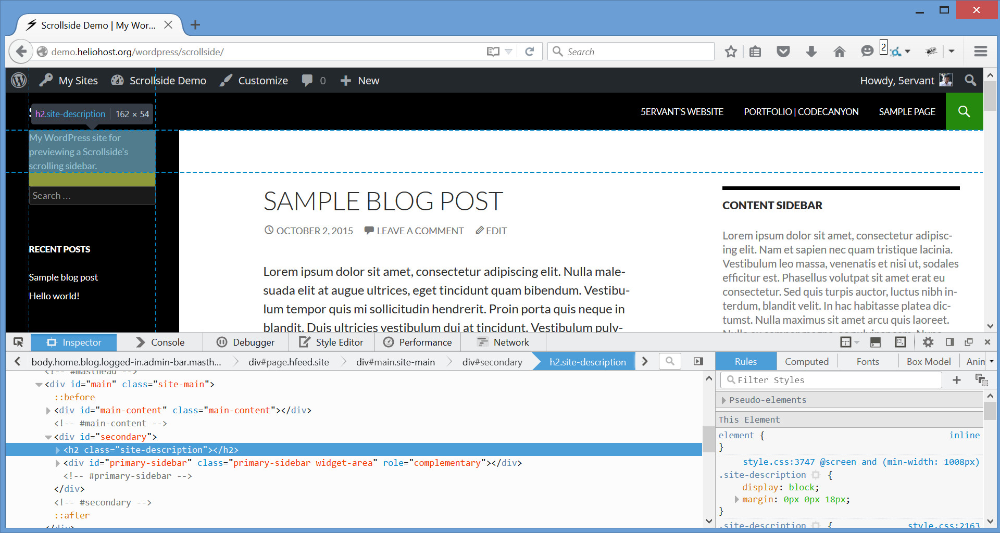

Updated: 9/20/2015
By: 5ervant (Mark Anthony B. Dungo)
Email: 5ervant [@t] protonmail [d0t] com
If you have any questions that are beyond the scope of this documentation, please feel free to email via my user page contact form here.
If you already purchased and downloaded the Scrollside's WordPress plugin in a .zip format, you can now follow these instructions:
After activating, you can now see the "Scrollside" options page under the "Settings" menu, go to that page to configure the plugin.
Here's the overview of the Scrollside Settings' fields:
| Name | Type | Default | Description |
|---|---|---|---|
| Scrollside selector | CSS selector | #secondary | A .class-name, #id-attribute or any CSS selector for the sidebar's container that'll become a scrollside, or any selector for the sidebar if you doesn't have an outer sidebar. |
| Row selector | CSS selector | #main | CSS selector for the row's element that contains the sidebar, main content's element and the other element(s) if any. Just set to .row if your theme is using Bootstrap grid system. |
| Sidebar selector | CSS selector | >:first-child | CSS selector for the sidebar that's inside of the sidebar's container or outer sidebar a.k.a. scrollside. By default, it will select the first child element of the scrollside to be the sidebar. If your sidebar doesn't have an outer container, you can just put your sidebar's selector (not the default >:first-child one) in both "Scrollside selector" and "Sidebar selector" fields. |
| Mobile width | number or 'true' or 'false' |
true | The max-width in pixels, of the document for mobile view where the sidebar's top-margin will set back to its original position and will start moving again when the viewport become above it. Just set to true for automatic mobile width or if your theme is using Bootstrap grid system, or false for forever moving sidebar. |
| Mobile animate | 'auto', 'css' or 'scroll' |
auto | Mobile animation will only perform if the desktop view become mobile view. The default auto will automatically scroll back the sidebar to its original position. Setting to css will auto statically set back the sidebar without animation. And scroll is just like the auto but the animation will only perform when you scroll. |
| Top padding | number | 15 | A non-literal top padding or an additional margin-top in pixels, of the sidebar when it's moving. |
| Top padding decrement | negative number | -15 | Must be a negative number, it's the "Top padding" decrementation if the sidebar's bottom reach the row's bottom. It's very useful if your row's element is unexpectedly increasing its height due to the reaching of the moving sidebar on its bottom. |
| Scroll duration | number or the string 'fast' or 'slow' |
400 | Milliseconds to complete the sidebar's moving animation per scroll. The strings fast and slow can be supplied to indicate durations of 200 and 600 milliseconds. |
| Mobile duration | number | 2000 | Milliseconds to complete the moving back to the original position of the sidebar if the desktop view become mobile view. And will only effect when the "Mobile animate" is not set to css. |
The minimal options that you can provide without touching the other defaults:
A few things to consider if your theme is using Bootstrap 12-column grid system:
col-*-* class to be your sidebar's container, to input its unique CSS selector in the "Scrollside selector" field..row , it's a Bootstrap predefined grid class for a row's element.true to make the mobile responsiveness rely in a predefined grid col-*-* class of your scrollside.It's a good practice if your sidebar is inside of a container which is known as a sidebar's container or outer sidebar and that container is inside of a row's element that contains the other column(s) including the main content. In case your sidebar doesn't have an outer container, don't worry, you can input your sidebar's selector in both "Scrollside selector" and "Sidebar selector" fields.
Lets say we will configure our plugin to "Add New Scrollside" for a Twenty Fourteen theme:
We can find the element of the row that we need by starting to point our mouse to the very top content of our target sidebar, click the right mouse button then after that, click "Inspect element":
Here's the example that you'll going to see after the previous instruction:
Now try to point or left click your mouse to the HTML element that contains your sidebar, main content and other column(s) if any, and the easiest is to get its unique identifier, ID attribute or class name. In our example the identifier that we will choose is the ID "main" and we will need to precede it with # because it's an ID attribute, to make it an ID selector like #main which we will going to input in our "Row selector".
And because the Twenty Fourteen theme doesn't have a sidebar's container, we will just get the selector for our sidebar to input in our "Scrollside selector". To get that, we need to point our mouse on our sidebar's element that's inside of our row and get its identifier, we will get the ID "secondary" and precede it with # like #secondary and apply that selector in our "Scrollside selector".
And because the selector that we've inputed to our "Scrollside selector" is for our sidebar, we will also need to input #secondary in our "Sidebar selector" where it truly belongs.
The selectors that we got are #main for our "Row selector" and #secondary for our "Sidebar selector" and for our "Scrollside selector" because we don't have a sidebar's container. There are many kinds of selectors that we can use to select the elements that we need, but the two basic selectors that we can easily used are an ID selector that preceded with # like #id and a class selector that preceded with a dot like .class, for more info please visit: https://api.jquery.com/category/selectors/
Here are some features that need an overview:
true and the plugin will track the class prefix .col-*- of your scrollside as its mobile width.I've included the following JScript.
I'd be glad to help you if you have any questions relating to this item. No guarantees, but I'll do my best to assist. If you have a more general question relating to the items on CodeCanyon, you might consider visiting the forums and asking your question in the "Item Discussion" section.
5ervant (Mark Anthony B. Dungo)
{kind=link}
{kind=link}
{kind=link}
{kind=link}
{kind=link}